<rig name> by Ravbug Animations Youtube: https://www.youtube.com/ravbuganimations Website: https://ravbug.github.ioYou will need to re-link the textures for the rigs. If you want my rigs to just work, place the textures inside your project as follows:
sourceimages/images for textures/minecraft textures/textures-new/
Or you can manually link them. Check out this
page for information about how to extract the textures from Minecraft.
Creeper Rig
Rig Features:- IK Feet controls
- Smooth bending Body
- Eyelid Controls
- pupil control
Download Creeper Rig
Guardian Rig
Rig Features:- Tail bends in 3 places
- Retractable Spines
- Eye Control
- Eyelid Controls
- Top eyelid rotates
- 4 Blendshapes for further emotion control
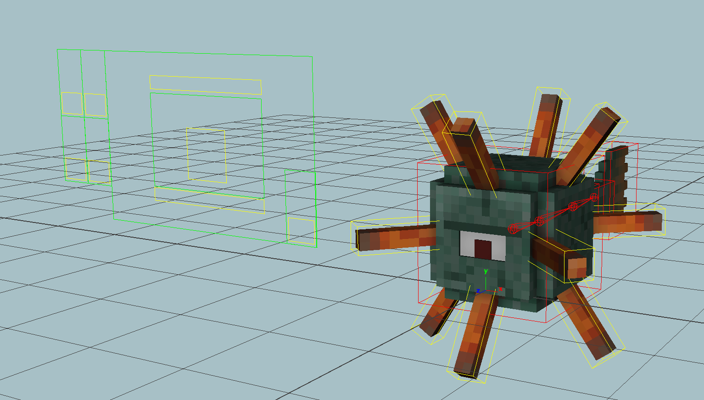 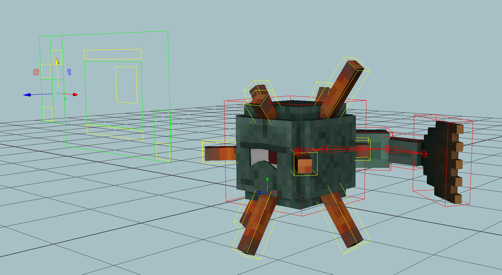
Download Guardian Rig
Enderman Rig
Rig Features:- IK arms and legs
- FK controls for arms
- Bending body
- Eyelid close
- Eyelid tilt control for top
- Ender particle emits from rig
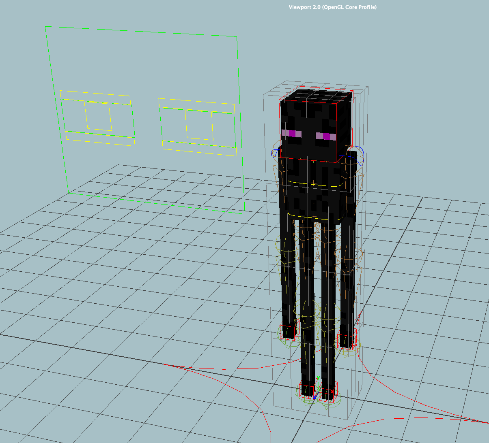 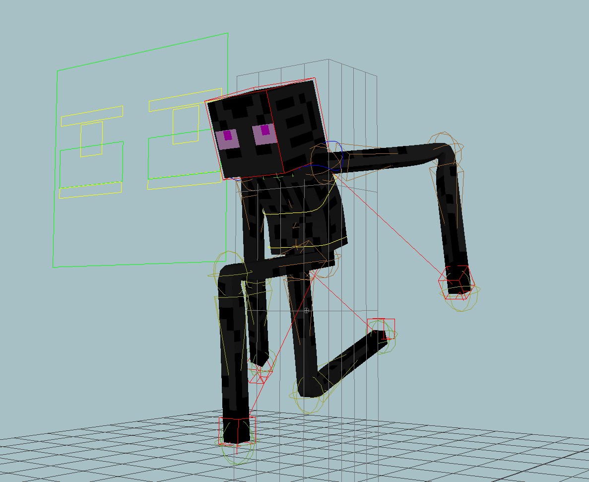
Download Enderman Rig
Download Ender Particle Texture
Ghast Rig
Return to Sender. Rig Features:- IK controlled tentacles
- toggle between normal and "fireball" states
Download Ghast Rig
Slime Rig
Stylized like the slime from Slamacow's Stick by Me Rig Features:- 100% deformer controlled
- Smooth bends
- Rounded outer slime
- Squash controller
- Twist controller (for top and bottom)
- Bend controller
- Flexible Eye and mouth system
- rotating and resizing the controllers also resizes / rotates the facial features
- Refractive outer material (see images)
- Adjust the Mental Ray -> Refractions to adjust the amount of light bending.
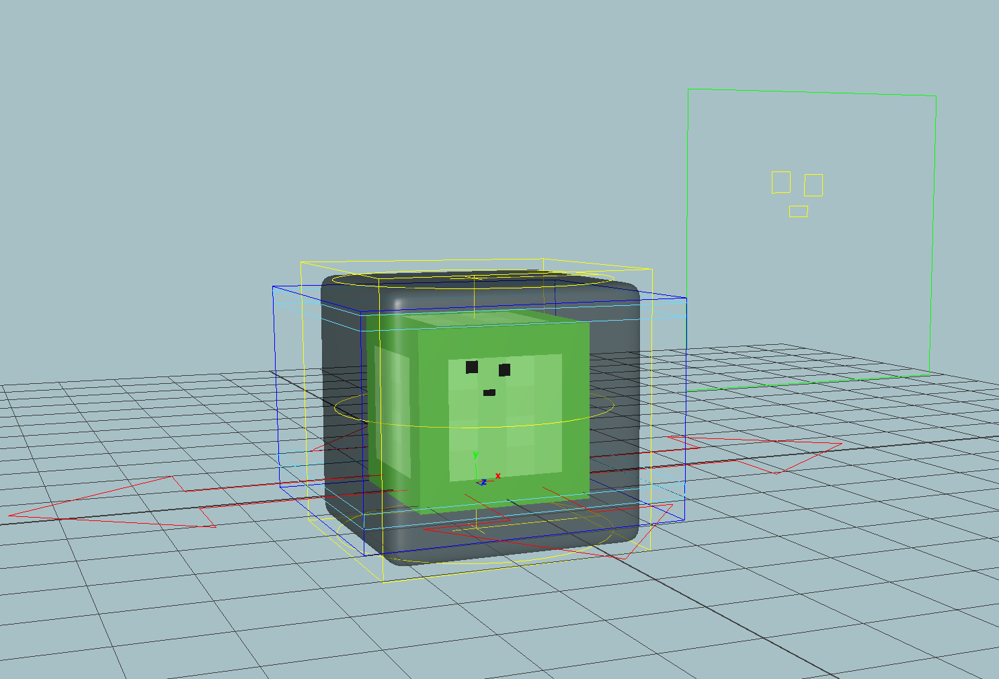 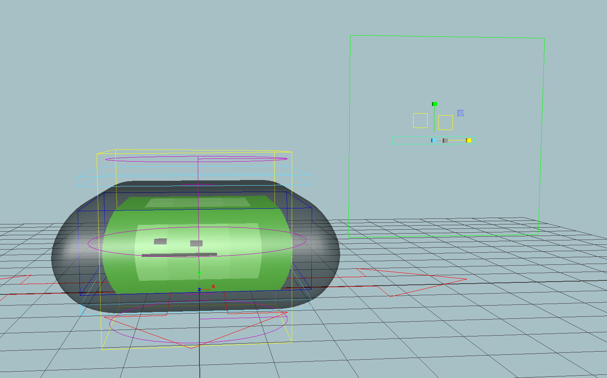 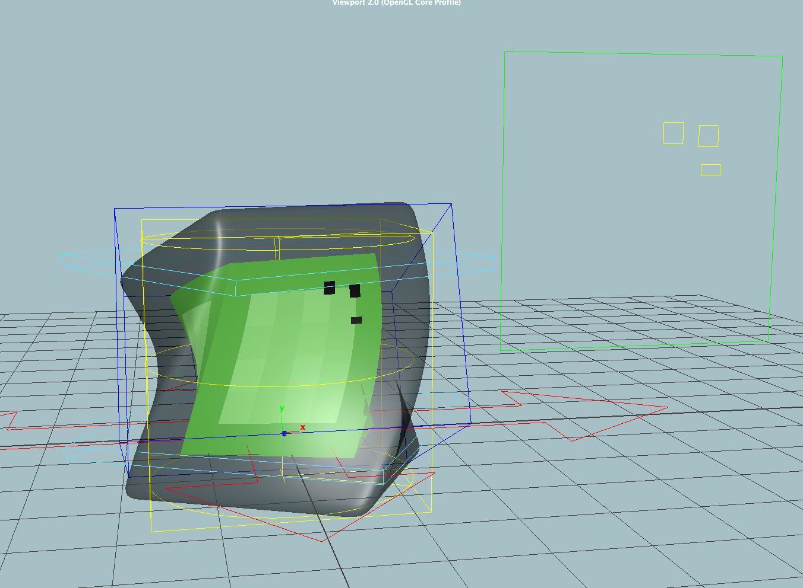 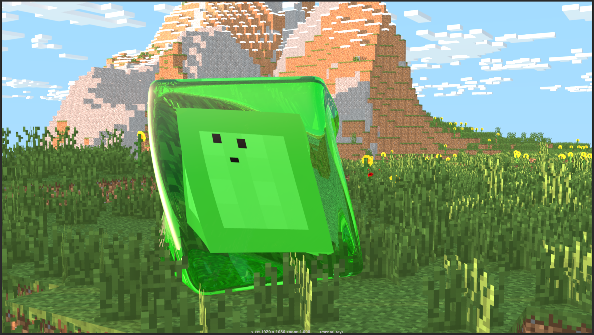
Download Slime Rig
Skeleton Rig (Shrogg Edit)
This rig is not 100% my own, this is a modified version of Shrogg's Skeleton rig. Features I added:- 3D bones on the arms (bend them to see what I mean)
- Fancy IK driven bow
- 6 additional controls per eye for emotion
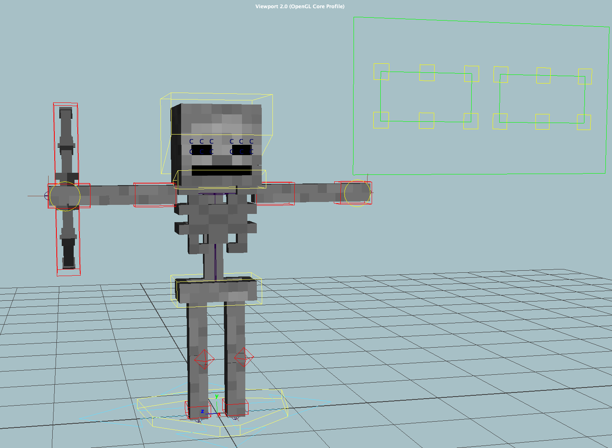 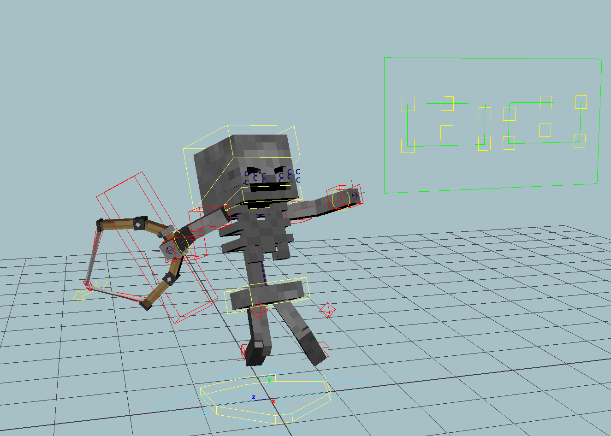
Download Skeleton Rig
Download Bow Textures(apply this file to the bow material)
Spider Rig
Dem legs. Features:- IK driven legs
- Glowing eyes
- Abdomen rotation control
- Extrusions on face
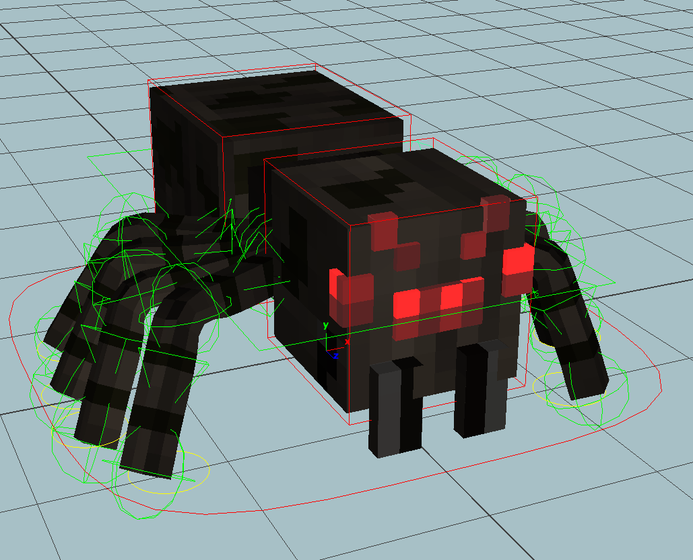 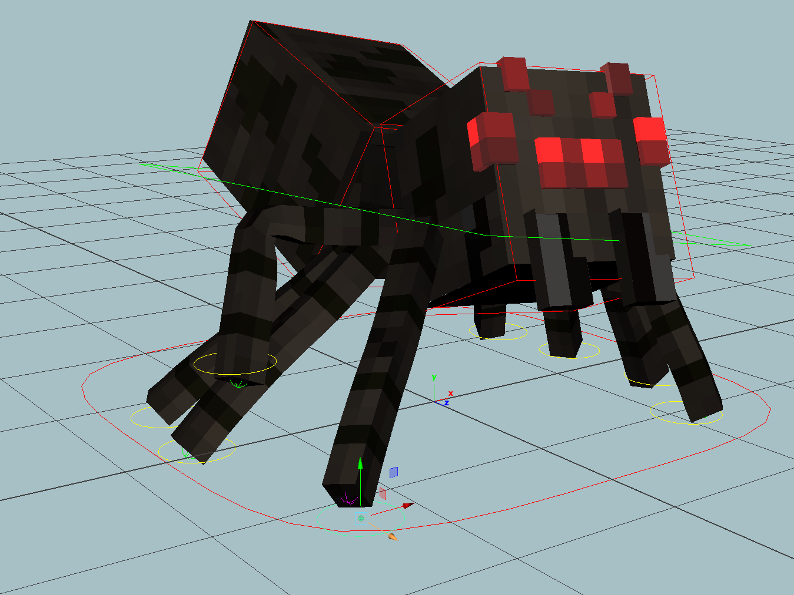
Download Spider Rig
Ender Dragon Rig
Now you can finally beat the game! Features:- Every ligament in the tail and neck has a controller
- Wings articulate, selecting all 4 controllers together allows for easy wing animation
- Glowing eyes
- IK driven legs
- Opening mouth
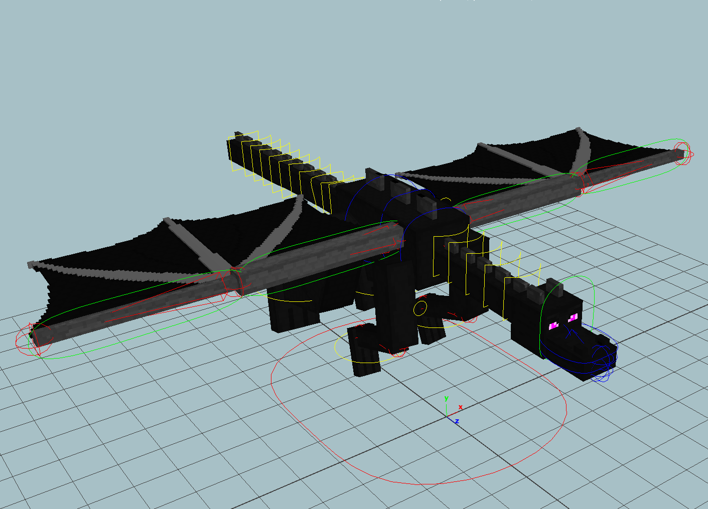 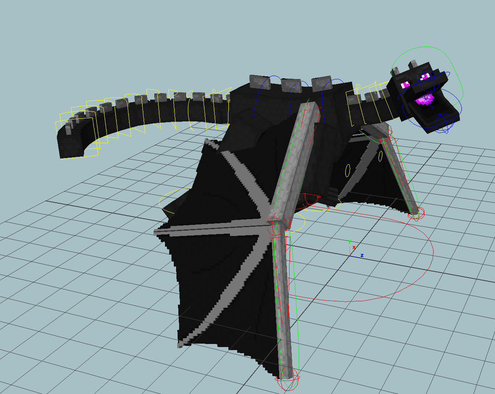
Download Ender Dragon Rig